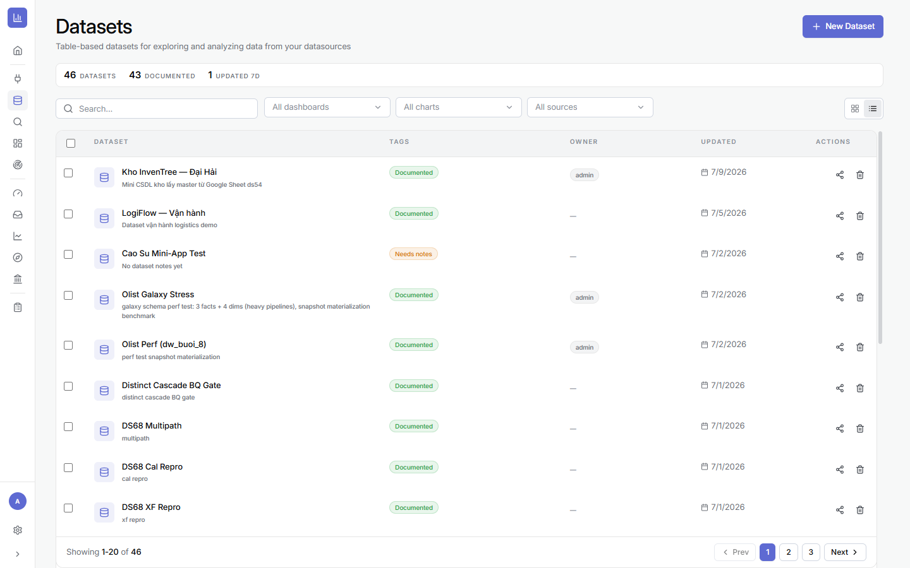
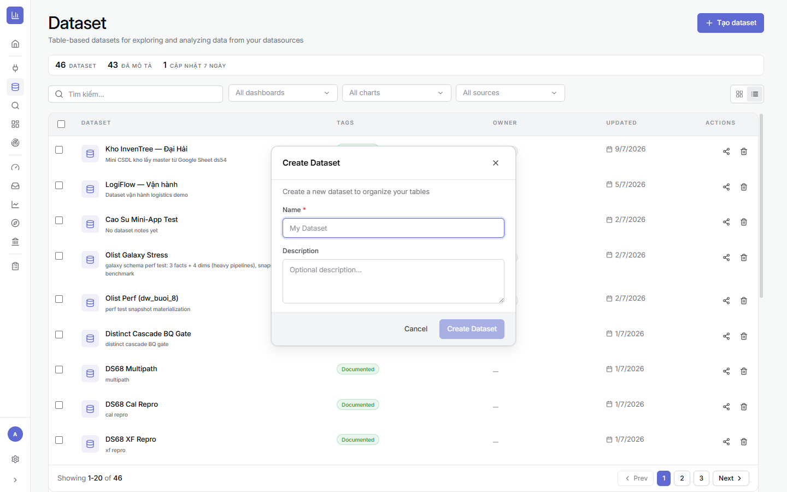
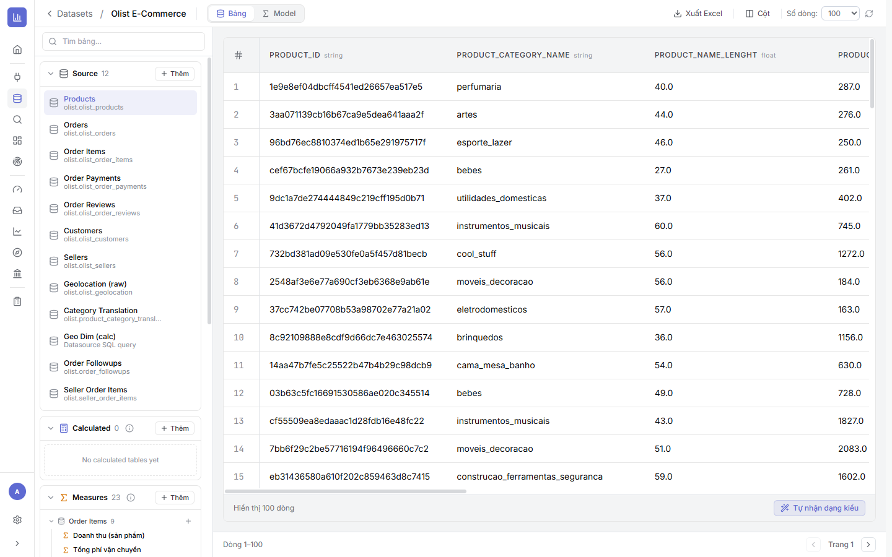
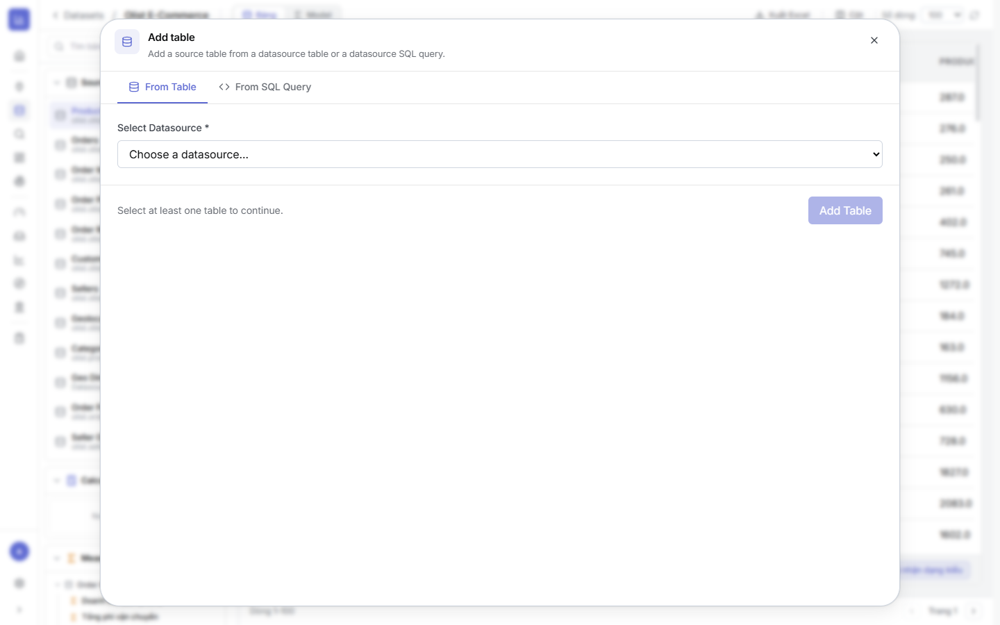
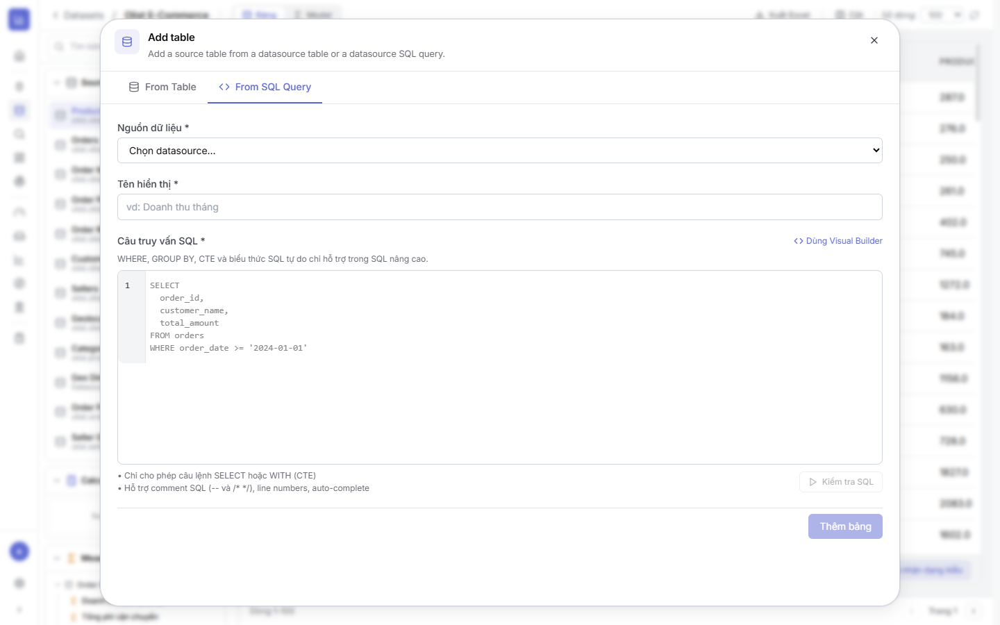
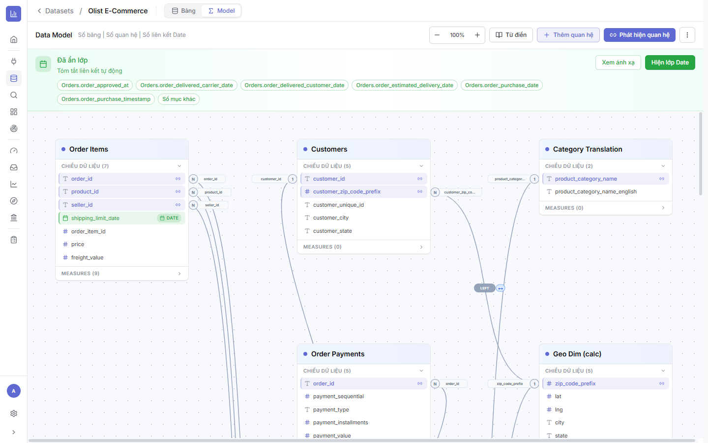
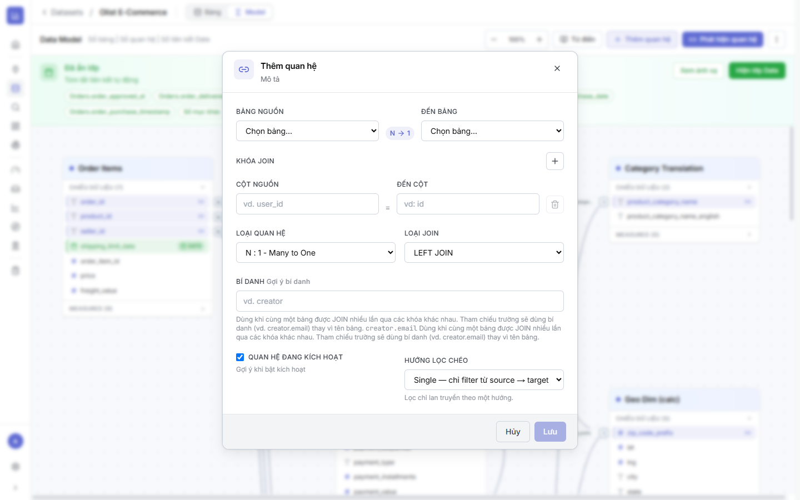
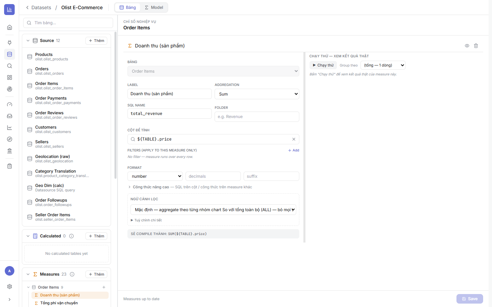

2.1Dataset là gì & tạo Dataset mới
Là gì: một Dataset là tập hợp các bảng liên quan (lấy từ một hoặc nhiều nguồn) được nhóm lại để phân tích. Bạn không cần kéo cả schema vào — chỉ thêm những bảng phục vụ đúng mục tiêu báo cáo.
⚙ Cách tạo
- Mở Datasets ở thanh điều hướng trái.
- Bấm + Tạo dataset (New Dataset) ở góc trên phải.
- Nhập Name (bắt buộc) — đặt theo nghiệp vụ, ví dụ “Olist E-Commerce”; thêm Description nếu muốn.
- Bấm Create Dataset. Dataset trống được tạo, sẵn sàng để thêm bảng.


2.2Màn hình Dataset — 2 tab: Bảng & Model
Là gì: mở một Dataset, bạn thấy 2 tab: Bảng (thêm & xem dữ liệu) và Model (nối quan hệ giữa các bảng). Cột trái của tab Bảng chia 3 khu:
- Source — bảng lấy trực tiếp từ nguồn (ví dụ
olist.olist_products,olist.olist_orders…). - Calculated — bảng bạn tự dựng bằng câu lệnh SQL (bảng phái sinh).
- Measures — các chỉ số đo lường, gom theo bảng (định nghĩa ở mục 2.8).
Bên phải là xem trước dữ liệu kèm thanh công cụ Xuất Excel, Cột, Số dòng và phân trang.

Products.2.3Thêm bảng nguồn (From Table)
Là gì: đưa một bảng có sẵn từ nguồn vào Dataset — cách phổ biến nhất.
⚙ Cách làm
- Ở khu Source, bấm + Thêm → tab From Table.
- Ở Select Datasource, chọn nguồn đã tạo ở Chương 1 (ví dụ Olist Postgres).
- Tích chọn một hoặc nhiều bảng (nút Add Table sáng khi đã chọn ≥1 bảng).
- Bấm Add Table. Bảng xuất hiện trong khu Source, xem trước ngay.

2.4Thêm bảng bằng SQL (From SQL Query)
Là gì: khi cần một bảng đã biến đổi (lọc sẵn, gộp nhóm, join, chuẩn hoá category…), tạo bảng phái sinh bằng câu truy vấn SQL — nằm ở khu Calculated.
⚙ Cách làm
- Bấm + Thêm → tab From SQL Query.
- Chọn Nguồn dữ liệu, đặt Tên hiển thị (ví dụ “Doanh thu tháng”).
- Viết Câu truy vấn SQL (có line numbers, auto-complete, comment
--,/* */). - Bấm Kiểm tra SQL để chạy thử, rồi Thêm bảng.

SELECT/WITH (CTE); có nút Dùng Visual Builder.2.5Kiểu dữ liệu & chất lượng — kiểm trước khi nối
Là gì: kiểm dữ liệu ngay tại Dataset rẻ hơn nhiều so với debug biểu đồ. Phần xem trước giúp phát hiện cột nhiều null, giá trị lệch, hoặc sai kiểu (số bị nhận thành chữ).
⚙ Cách làm
- Chọn từng bảng, cuộn xem trước — để ý cột trống, định dạng ngày, số thập phân.
- Chú ý nhãn kiểu cạnh tên cột (
string,float,DATE). Cột số đang làstringsẽ không SUM được, và khoá join sai kiểu sẽ không nối được. - Bấm Tự nhận dạng kiểu (Auto-detect types) để hệ thống đoán lại kiểu cột.
- Sửa gốc ở nguồn hoặc bảng SQL — đừng bù bằng bộ lọc ở từng biểu đồ.
2.6Tab Model — nối quan hệ giữa các bảng
Là gì: tab Model là sơ đồ quan hệ (ERD): mỗi bảng là một thẻ, mỗi đường nối là một quan hệ. Đây là nơi khai báo bảng nào nối bảng nào qua khoá nào — để khi vẽ biểu đồ, hệ thống biết cách gộp số giữa các bảng cho đúng (ví dụ đơn hàng ↔ khách hàng ↔ sản phẩm).
⚙ Cách mở & đọc
- Trong Dataset, bấm tab Model. Thanh trên có: zoom, Từ điển, + Thêm quan hệ, Phát hiện quan hệ, Hiện lớp Date.
- Mỗi thẻ bảng liệt kê CHIỀU DỮ LIỆU (cột, có nhãn kiểu
T/#/DATE) và số MEASURES. - Đường nối giữa hai bảng hiển thị chiều quan hệ (ví dụ N → 1) và loại join (ví dụ LEFT).
- Bấm Phát hiện quan hệ để hệ thống tự gợi ý quan hệ bằng cách khớp tên khoá (ví dụ
customer_id↔customer_id) — nhanh, sau đó rà lại.

Order Items nối Products/Orders/Sellers; Orders nối Customers; Customers nối Geo Dim qua zip_code_prefix; Category Translation dịch tên ngành hàng.2.7Thêm quan hệ thủ công & các loại join
Là gì: khi tự nối (hoặc chỉnh quan hệ auto-detect), bạn khai báo đầy đủ: hai bảng, (các) khoá join, chiều quan hệ, loại join và hướng lọc.
⚙ Cách làm (nút “+ Thêm quan hệ”)
- Bảng nguồn → Đến bảng: chọn hai bảng cần nối (ví dụ Order Items → Products).
- Khoá join: chọn Cột nguồn = Đến cột (ví dụ
product_id=product_id). Bấm + để thêm khoá nếu join bằng nhiều cột. - Loại quan hệ: N : 1 (Many to One — phổ biến nhất), 1 : 1, hoặc 1 : N.
- Loại join: LEFT JOIN (giữ mọi dòng bảng nguồn) hoặc INNER JOIN (chỉ dòng khớp).
- Bí danh (tuỳ chọn): dùng khi một bảng được join nhiều lần qua các khoá khác nhau — tham chiếu sẽ dùng bí danh (ví dụ
creator.email). - Hướng lọc chéo: Single (chỉ filter từ nguồn → đích) hoặc Both (hai chiều). Rồi bấm Lưu.

2.8Định nghĩa Measures (chỉ số đo lường)
Là gì: Measure là chỉ số tính toán tái sử dụng (SUM/AVG/COUNT…). Định nghĩa một lần ở Dataset, dùng lại ở mọi biểu đồ & dashboard — số liệu nhất quán, không phải gõ lại công thức. ds111 có sẵn 23 Measures (ví dụ Doanh thu (sản phẩm), Tổng phí vận chuyển).
⚙ Cách tạo một Measure
- Ở khu Measures, chọn bảng rồi bấm + (Thêm measure), hoặc bấm vào measure có sẵn để sửa.
- Label (tên hiển thị) + SQL name (ví dụ
total_revenue) + Folder (nhóm, tuỳ chọn). - Aggregation: Sum / Avg / Count / Count Distinct / Min / Max.
- Cột để tính: chọn cột (ví dụ
${TABLE}.price). - Filters (chỉ áp cho measure này) + Format (number / decimals / suffix).
- Xem dòng “Sẽ compile thành” (ví dụ
SUM(${TABLE}.price)) và bấm Chạy thử để xem kết quả thật, rồi Save.

SUM(price) trên bảng Order Items — có Aggregation, Cột để tính, Format, Ngữ cảnh lọc và nút Chạy thử.2.9Xong Chương 2 — Checklist
- ✅ Đã tạo 1 Dataset có tên rõ ràng và thêm các bảng cần dùng (source & SQL).
- ✅ Đã xem trước & Tự nhận dạng kiểu — cột số/ngày đúng kiểu.
- ✅ Ở tab Model, các bảng đã được nối quan hệ đúng (đúng khoá, đúng chiều N:1, đúng loại join).
- ✅ Đã có các Measure chính (doanh thu, số đơn…) và Chạy thử ra số hợp lý.
➡️ Tiếp theo: Chương 3 · Explore — Tạo chart — dùng Dataset đã mô hình hoá để dựng biểu đồ đầu tiên.